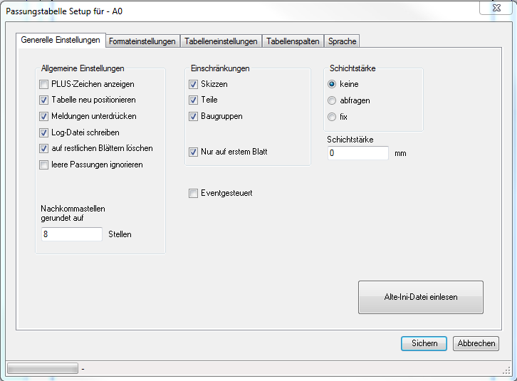

wenn aktiviert wird bei positiven Werten das "+" Symbol angezeigt
ist diese Option aktiviert, wird eine vorhandene Passungstabelle an dem unter Formateeinstellungen eingestellten Einfügepunkt eingefügt.
ist diese Option deaktiviert, wird eine vorhandene Passungstabelle an dem Punkt einfügt, an dem sich die vorhandene Tabelle befindet
es werden alle Hinweis- und Fehlermeldungen unterdrückt
diese Option ist sinnvoll, wenn das Makro Eventgesteuert ausgeführt wird und z.B.: ein Batch-Job über mehrere Datei ausgeführt wird
es werden alle Hinweise, Fehlermeldungen und zusätzliche Infos in eine Log-Datei geschrieben
die Log-Datei wird in das Verzeichnis "C:\Users\Benutzername\AppData\Roaming\nahe\Passungstabelle" geschrieben
Falls der Benutzer keine Schreibrechte auf dieses Verzeichnis hat, wird keine Log-Datei geschrieben.
Das Add-In funktioniert trotzdem.
eventuell vorhandenen Passungstabellen auf den restlichen Blättern werden gelöscht
es wird keine Meldung ausgegeben, wenn eine ungültige Passung gefunden wird
z.B.: ist für Maße > 50 keine Passung N3 definiert
da SolidWorks teilweise keine exakten Maßwerte liefert, werden alle Maße auf die hier angegebenen Nachkommastellen gerundet

Mit dem Personal Edition von HelpNDoc erstellt: HTML-Hilfedokumente einfach erstellen